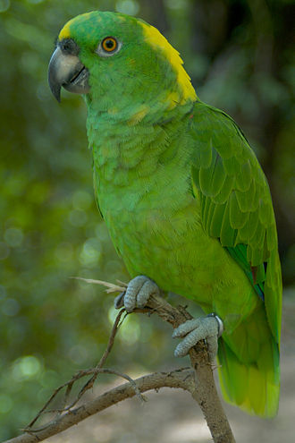
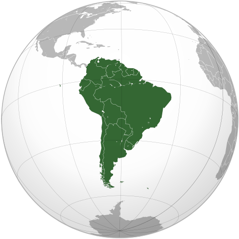

¿Qué son los loros?
Los loros (Psittacoidea) son una superfamilia del orden Psittaciformes,
con un total de 369 especies. Los loros típicos son más numerosos y están más
extendidos que las otras superfamilias de psitaciformes, las cacatúas y los
escasos y confinados loros de Nueva Zelanda.

Características de los loros
Todos los loros tienen picos curvos y son zigodáctilos, es decir que tienen
cuatro dedos en cada pie: dos apuntando hacia adelante y dos hacia atrás.
La mayoría de los loros comen frutas, flores, capullos, nueces, semillas y
algunas criaturas pequeñas, como insectos.
Otra característica de los loros es la intensa coloración de su plumaje.
El color predominante del plumaje de los loros es el verde, aunque la mayoría
de las especies tienen además algo de rojo, azul, amarillo y otros colores en
diversas cantidades.
Los miembros de Psittacoidea son especies predominantemente monógamas que
suelen anidar en cavidades (de árboles o túneles). Algunas especies pueden
imitar gran diversidad de sonidos, incluida la voz humana, entre otros sonidos
de su entorno.

Hábitat de los loros
Generalmente viven en regiones tropicales o cálidas. Los loros se extienden
por el hemisferio sur, además de la región tropical y subtropical del
hemisferio norte; distribuidos por el sur de Asia, el África subsahariana,
Oceanía, América del Sur y Central, y en el pasado había una especie nativa
de Norteamérica.
